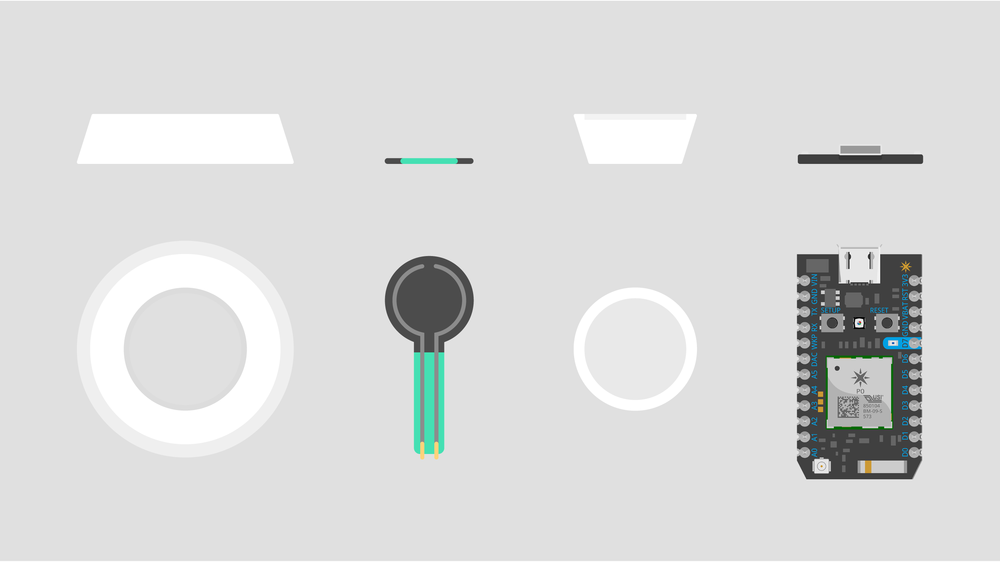
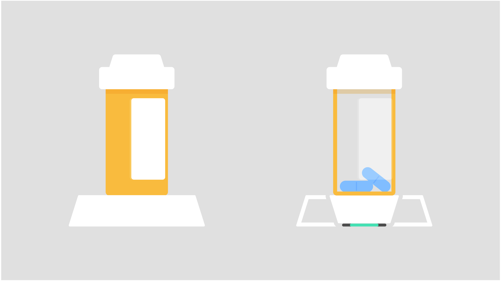

MediDock
Allowing for simple and seamless prescription medication dosage tracking, MediDock is an independently functioning iOS app with an accessory prescription dock, capable of tracking user dosage
Components
+ iOS Application + Prescription Bottle Dock
Personal Learning Areas
+ Product Design + iOS Development + Medication Privacy Laws (HIPAA) + Views of Detroit Skylines
Prescription Bottle Dock
The entire idea stemmed from a prescription bottle dock. For the design, the dock had to - require minimal user interaction - un-itrusively work in the user's current routine - track dosage
Components
+ Housing + Weight Scale or Pressure Sensor + Bottle-to-Sensor Stand + Spark Core
Hardware Components : Top View & Side View
Tracking
The tracking of dosage was designed with two different implementations, using a weight scale and using a pressure sensor. The later was implemented due to limitations in access to hardware. Dock : Side View and X-Ray View
Scale Implementation
With the scale implementation, the prescription bottle's weight can be measured, and using medical information and input for bottle type, we can calculate the exact number of pills left.Pressure Sensor Implementation
With the pressure sensor implementation, dosage is tracked every time that the pressure sensor is alleviated for an extended period of time (10-40 seconds)iOS Application
Adopting Inclusive Design, we focused on the user base that would have the most difficulty: the more elderly demographic. Therefore, we focused on:
+ Accessibility + Legality + Unitrusivity
Legality
We had to ensure that the application would fit with the HIPAA privacy laws for prescription medication. We had to ensure that features did not disclose information, and the user could have full comfort with using our application. Therefore, we had to remove features such as push notifications, doctor input, and storing in databases, as this will invades privacy by sharing dosage and prescription information.